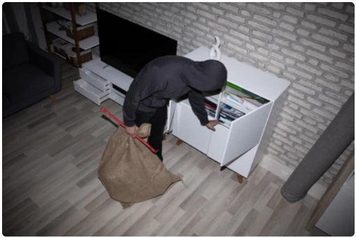

Users can submit detailed reports about items they have lost,including the item's description,where and when it was, and photos to help identify it.

Users who find misplaced items can post details such as the item's appearance,where it was found,and the time/date ,allowing the rightful owner to claim it.